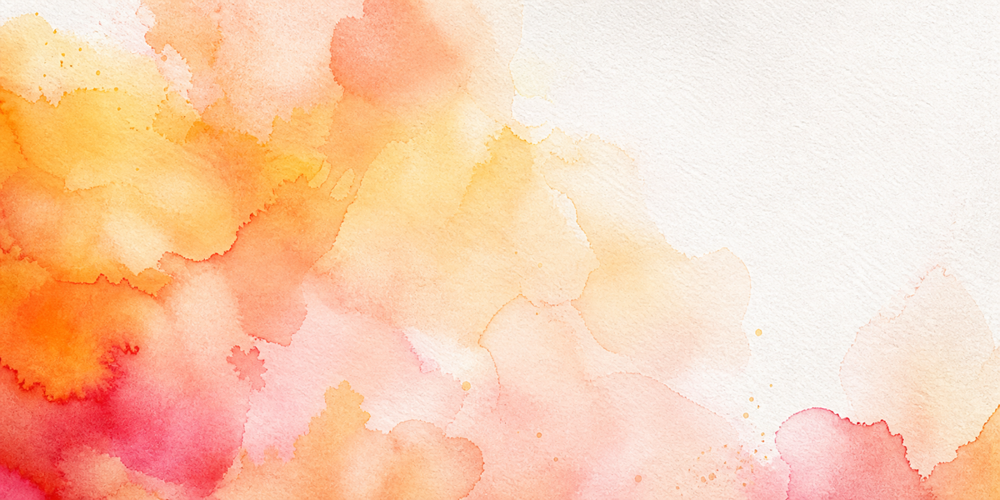
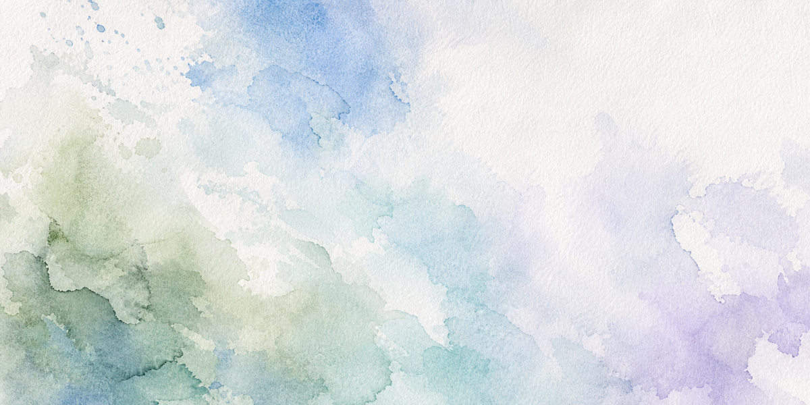

陈丽娜
教育学硕士（瑞士伯尔尼大学）｜15 年教育产品与教学闭环实战
Base 成都 ｜ 可接全国项目合作
38% →
75%
DEMO课转化
40% →
0.3%
教师流失
1,000+
师训覆盖
诊断产品 → 研发课程 → 培训出能打仗的老师
教育学硕士（瑞士伯尔尼大学）｜15 年教育产品与教学闭环实战
Base 成都 ｜ 可接全国项目合作
诊断产品 → 研发课程 → 培训出能打仗的老师


SERVICES & CASES
某机构试听课转化率长期卡在 38%。3 周诊断 + 教学触点重构，直接翻倍。
CONVERSION RATE

TESTIMONIALS
陈老师帮我们做 DEMO 课诊断后，3 周时间转化率翻倍。她不是给我们一个 PPT，而是带着我们现场改、现场练。
教师流失率从 40% 降到 0.3%，这在教育行业几乎不可能。她做到了。
8 周时间，从 0 到完整小课包交付，我们直接启动招生。她是我合作过最「落地」的产品人。
WHY CHOOSE ME
普通教研
给你方案，不管落地
普通培训师
讲完就走，不追结果
我
从诊断到落地到培训，一手包完，用数据验证
如果你是机构创始人：
"我做过 0-1，也做过 1-10。你的增长瓶颈，我大概率见过。"
如果你是教学负责人：
"我让一个机构的教师流失率从 40% 降到 0.3%。你的老师问题，我有系统解法。"
如果你是课程合作方：
"我研发的项目，NPS +50%、续费率 +35%。你的产品，我可以让它更能打。"
如果你正在纠结"课程卖不动 / 老师教不好 / 培训没效果"，我可以为你提供一次 30 分钟的免费诊断沟通。
立即预约 30 分钟免费诊断微信/电话：15757365158（添加请备注"诊断"）